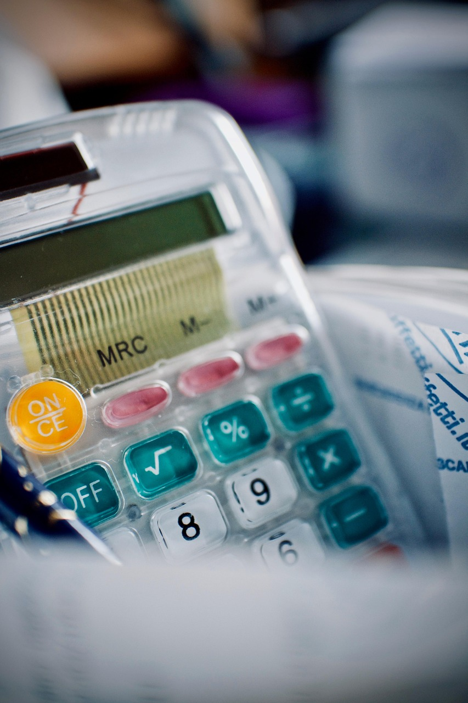
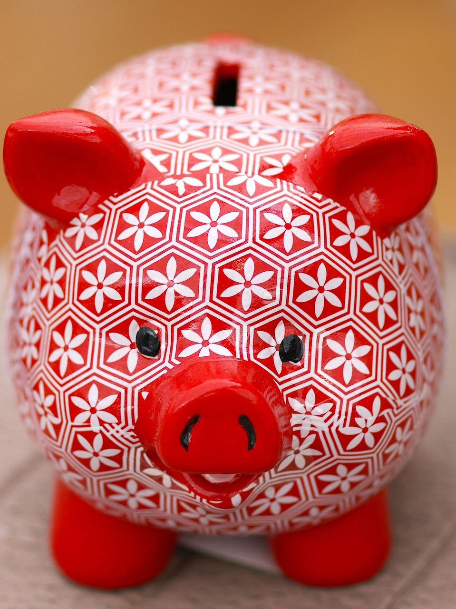

自民党が提言
自民党の提言では
1000万円
を、第3子が生まれたら
配る方針です。
2026年11月27日
自民党の人口戦略本部が
少子化対策の提言を
まとめました。
「人口戦略庁」の設置なども
盛り込まれています。

気になる財源
2025年に生まれた、第3子以降の子どもは
約11万2千人
全員に配ると、
約1.12兆円が必要です。
第1子も減少中
2025年に生まれた第1子は
約31万9千人
前年より3,296人
減っています。

財源の裏付けは？
少子化対策は大切で、
進めるべきです。
第1子も減るなか、
財源の裏付けがないまま
数字だけが先行していないでしょうか。
来週にも
この提言は、
総理大臣に提出されます。
この政策、
現実的だと思いますか？
どう思うか、コメントで教えてください。